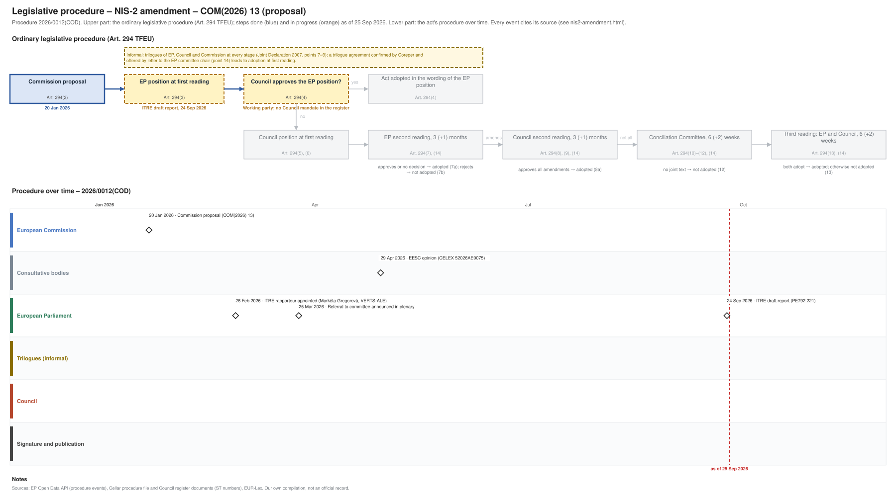

← All procedures · Regulation timeline
Procedure 2026/0012(COD), ongoing, as of 26 Sep 2026. Drawing: SVG · PNG · PDF (A3) · draw.io · Page as Markdown: nis2-amendment.md
| Stage | EP committee stage |
|---|---|
| Parliament | draft report 24 Sep 2026 |
| Council | working party, latest document 22 Jan 2026 |
| Latest activity | 24 Sep 2026 · European Parliament: ITRE draft report (PE792.221) |
| Next steps | EP: amendments and committee vote on the report and mandate; Council: working party towards a negotiating mandate |

| Date | Actor | Event | Document | Source |
|---|---|---|---|---|
| 2026-01-20 | European Commission | Commission proposal (Art. 294(2) TFEU) | COM(2026) 13 | Cellar (CELEX 52026PC0013) |
| 2026-02-26 | European Parliament | ITRE rapporteur appointed (Markéta Gregorová, VERTS-ALE) | EP Open Data API, procedure 2026-0012 (participation RAPPORTEUR) | |
| 2026-03-25 | European Parliament | Referral to committee announced in plenary | EP Open Data API, procedure 2026-0012 (REFERRAL) | |
| 2026-04-29 | Consultative bodies | EESC opinion | CELEX 52026AE0075 | Cellar procedure file 2026/12 |
| 2026-09-24 | European Parliament | ITRE draft report | PE792.221 | EP Open Data API, procedure 2026-0012 (COMMITTEE_TABLING_REPORT) |
| Date | Document | Kind | Subject |
|---|---|---|---|
| 2026-01-22 | ST 5611/26 | council-transmission | Proposal for a REGULATION OF THE EUROPEAN PARLIAMENT AND OF THE COUNCIL on the European Union Agency for Cybersecurity (ENISA), the European cybersecurity … |
| 2026-01-22 | ST 5611/26 ADD 1 | council-transmission | ANNEXES to the Proposal for a Regulation of the European Parliament and of the Council on the European Union Agency for Cybersecurity (ENISA), the European … |
| 2026-01-22 | ST 5611/26 ADD 2 | council-transmission | COMMISSION STAFF WORKING DOCUMENT EXECUTIVE SUMMARY OF THE IMPACT ASSESSMENT REPORT Accompanying the documents Proposal for a Regulation of the European … |
| 2026-01-22 | ST 5611/26 ADD 3 | council-transmission | REGULATORY SCRUTINY BOARD OPINION - Cybersecurity Act Review |
| 2026-01-22 | ST 5611/26 ADD 4 | council-transmission | COMMISSION STAFF WORKING DOCUMENT IMPACT ASSESSMENT REPORT Accompanying the documents Proposal for a Regulation of the European Parliament and of the Council … |
| 2026-01-22 | ST 5627/26 | council-transmission | Proposal for a DIRECTIVE OF THE EUROPEAN PARLIAMENT AND OF THE COUNCIL amending Directive (EU) 2022/2555 as regards simplification measures and alignment with … |
| 2026-01-22 | ST 5627/26 ADD 1 | council-transmission | ANNEX to the Proposal for a DIRECTIVE OF THE EUROPEAN PARLIAMENT AND OF THE COUNCIL amending Directive (EU) 2022/2555 as regards simplification measures and … |
| 2026-04-29 | CELEX 52026AE0075 | opinion | Opinion of the European Economic and Social Committee a) Proposal for a Regulation of the European Parliament and of the Council on the European Union Agency … |
| 2026-09-24 | PE792.221 | ep-draft-report | DRAFT REPORT on the proposal for a directive of the European Parliament and of the Council amending Directive (EU) 2022/2555 as regards simplification measures … |
{kind=link}
{kind=link}